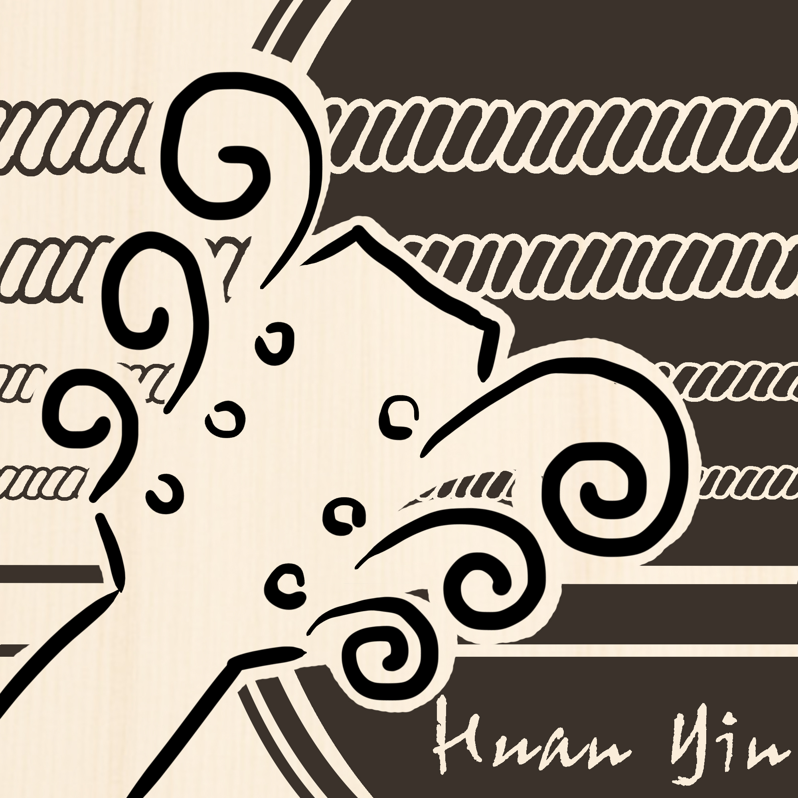

弦吟指板筆記
Singing Fretboard Notes
調弦
快捷鍵列表
⌘＋左鍵
用目前的顏色、形狀或橡皮擦，編輯全指板同一個音
⌘＋⌥＋左鍵
全指板擦掉這個音
⌘＋右鍵
跳出「設為主音」
按住⌥
快速開啟橡皮擦
Space
切換 A／B
⌘＋E
打開匯出圖片視窗
⌥＋1～9
切換到第 1～9 個分頁
⌘＋⇧＋M
圓點音效開／關
Windows：⌘ → Ctrl，⌥ → Alt
{{ row.lab }}
級數
已選取 {{ selLabel }}
只能圈選 3～5 格，請重新框選。
提醒💡：選擇音階後，才會開啟「依級數上色」功能。
{{ exportErr }}
{{ bubPre }}{{ bubName }}{{ bubPost }}
請橫放手機，以獲得最佳使用體驗。
網頁版可以使用完整功能(和弦/指板)。
{{ row.lab }}
{{ row.lab }}
級數
提醒💡：選擇音階後，才會開啟「依級數上色」功能。
開新專案
指板和和弦是同一個專案。要清空哪些？
要先儲存目前的專案嗎？
{{ newSaveMsg }}
要先儲存目前的專案嗎？
開啟專案會取代目前所有的指板分頁和和弦本，而目前的修改還沒存成專案檔。
檔案
專案檔（.json）
圓點音效（⌘⇧M）
匯出圖片
預覽
{{ pvDim }}
版面
檔案格式
尺寸
背景
Singing Fretboard
{{ tHead }}{{ tAcc }}{{ tRest }}
{{ eHead }}{{ eAcc }}{{ eRest }}
{{ row.lab }}
{{ d.nb }}{{ d.na }}
{{ d.s }}
{{ zeroT }}
{{ f.t }}
{{ f.t }}
{{ d.nb }}{{ d.na }}
{{ d.s }}
{{ stepLabel }}
{{ stepLabelEn }}
主音
音階
{{ fkT }}
調弦
顏色
新增音符：選擇顏色後，點擊指板以增加音符。
橡皮擦：按住 Alt（Option）或直接右鍵點擊。
框選範圍：在指板上按住左鍵拖曳。
數字 = 該音階級數，點一下把這個級數整組換成目前的顏色；橡皮擦開啟時則清除。
圓點標示
{{ row.lab }}
橡皮擦：按住 Alt（Option）或直接右鍵點擊。
框選範圍：在指板上按住左鍵拖曳。
依級數上色
快速切換
分別把兩組音階存入 A、B，點擊 空白鍵 即可來回切換。
匯出圖片
專案檔
{{ fileMsg }}
© 2026 弦吟 Singing in String · 劉桓吟 HuanYin
{{ subToast }}